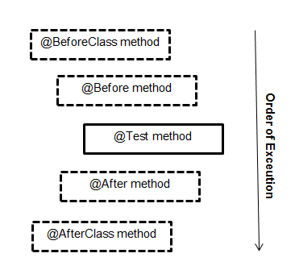

What is the main difference between
-
@Before and @BeforeClass
- and in JUnit 5
@BeforeEach and @BeforeAll
-
@After and @AfterClass
According to the JUnit Api @Before is used in the following case:
When writing tests, it is common to find that several tests need similar
objects created before they can run.
Whereas @BeforeClass can be used to establish a database connection. But
couldn't @Before do the same?
Answer
The code marked @Before is executed before each test, while @BeforeClass
runs once before the entire test fixture. If your test class has ten tests,
@Before code will be executed ten times, but @BeforeClass will be executed
only once.
In general, you use @BeforeClass when multiple tests need to share the same
computationally expensive setup code. Establishing a database connection falls
into this category. You can move code from @BeforeClass into @Before, but
your test run may take longer. Note that the code marked @BeforeClass is run
as static initializer, therefore it will run before the class instance of your
test fixture is created.
In JUnit 5, the tags @BeforeEach and @BeforeAll are the equivalents of
@Before and @BeforeClass in JUnit 4. Their names are a bit more indicative
of when they run, loosely interpreted: 'before each tests' and 'once before
all tests'.
Suggest
Difference between each annotation are :
+-------------------------------------------------------------------------------------------------------+
¦ Feature ¦ Junit 4 ¦ Junit 5 ¦
¦--------------------------------------------------------------------------+--------------+-------------¦
¦ Execute before all test methods of the class are executed. ¦ @BeforeClass ¦ @BeforeAll ¦
¦ Used with static method. ¦ ¦ ¦
¦ For example, This method could contain some initialization code ¦ ¦ ¦
¦-------------------------------------------------------------------------------------------------------¦
¦ Execute after all test methods in the current class. ¦ @AfterClass ¦ @AfterAll ¦
¦ Used with static method. ¦ ¦ ¦
¦ For example, This method could contain some cleanup code. ¦ ¦ ¦
¦-------------------------------------------------------------------------------------------------------¦
¦ Execute before each test method. ¦ @Before ¦ @BeforeEach ¦
¦ Used with non-static method. ¦ ¦ ¦
¦ For example, to reinitialize some class attributes used by the methods. ¦ ¦ ¦
¦-------------------------------------------------------------------------------------------------------¦
¦ Execute after each test method. ¦ @After ¦ @AfterEach ¦
¦ Used with non-static method. ¦ ¦ ¦
¦ For example, to roll back database modifications. ¦ ¦ ¦
+-------------------------------------------------------------------------------------------------------+
Most of annotations in both versions are same, but few differs.
Reference
Order of Execution.
Dashed box -> optional annotation.
